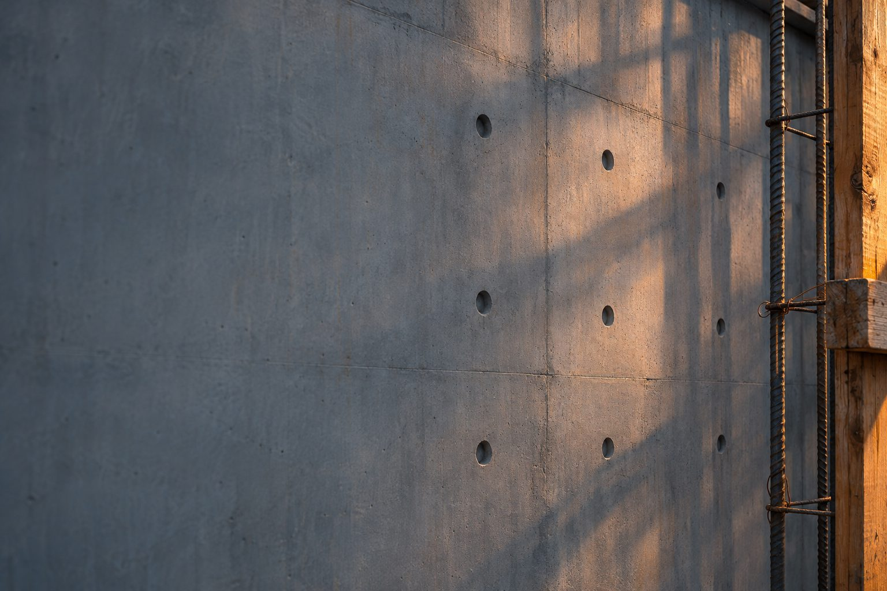
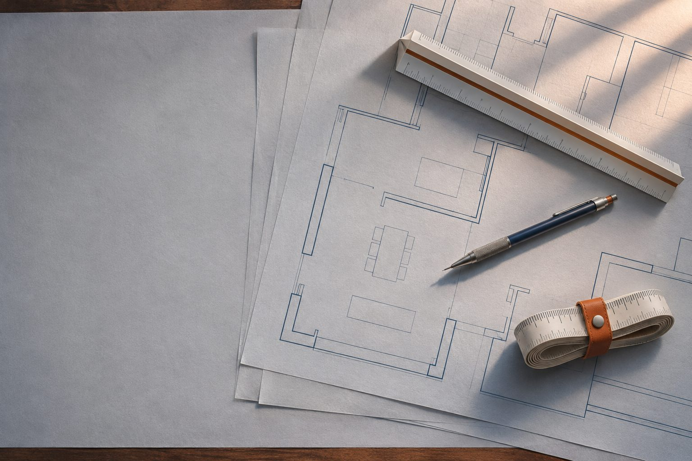
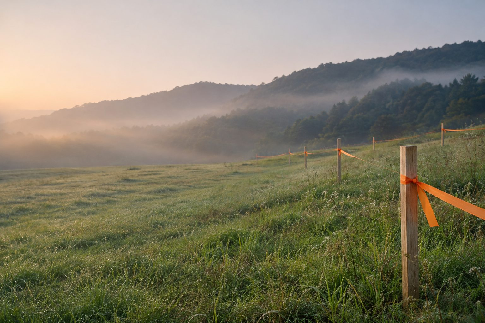
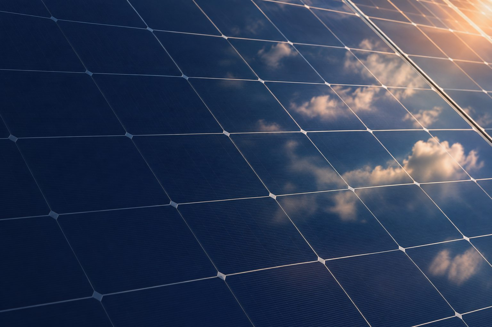
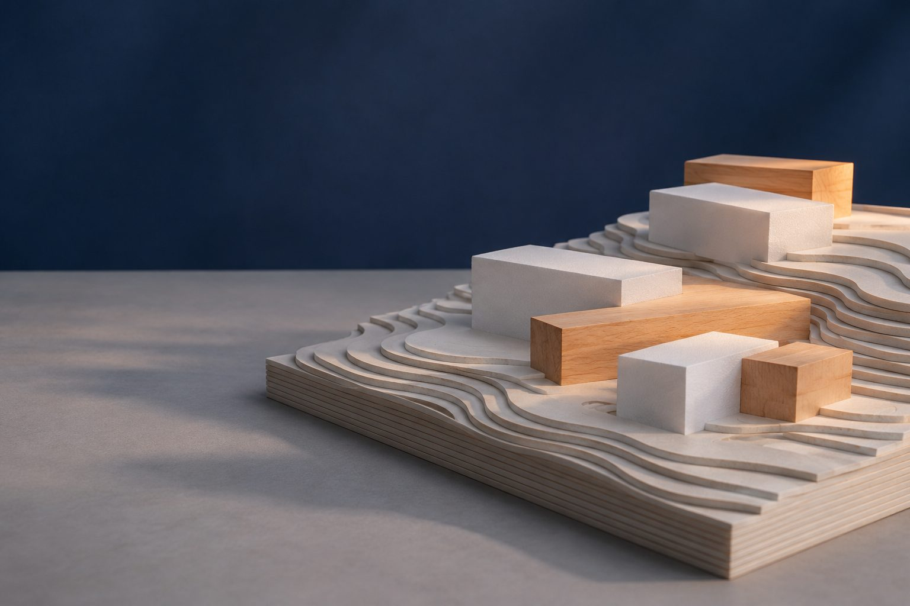

01
건축 시공
신축 · 증축 · 리모델링
주택부터 상업시설까지, 신축·증축·리모델링 전 과정을 책임 시공합니다. 착공 전 협의부터 준공까지 한 담당자가 끝까지 관리하므로, 공정이 넘어갈 때마다 처음부터 다시 설명하실 필요가 없습니다.
- 단독주택 · 다가구 신축
- 기존 건물 증축 · 대수선
- 상가 · 사무실 리모델링
- 노후 주택 개보수
Business
토지 검토부터 시공, 에너지 설비까지 한 곳에서 진행합니다.

01
신축 · 증축 · 리모델링
주택부터 상업시설까지, 신축·증축·리모델링 전 과정을 책임 시공합니다. 착공 전 협의부터 준공까지 한 담당자가 끝까지 관리하므로, 공정이 넘어갈 때마다 처음부터 다시 설명하실 필요가 없습니다.

02
설계와 시공을 함께
설계와 시공을 함께 진행해 도면과 현장 사이의 간극을 줄입니다. 설계 단계에서 시공성과 공사비를 함께 검토하기 때문에, 착공 후에 “이건 안 된다”며 설계를 되돌리는 일이 줄어듭니다.

03
토지 검토부터 준공까지
토지 검토부터 인허가, 부지 조성, 주택 시공까지 전원주택에 필요한 단계를 하나로 잇습니다. 땅을 먼저 보고 “여기에 무엇을, 얼마에 지을 수 있는지”부터 확인해 드립니다.

04
설계 · 시공 · 유지보수 · 기자재 공급
건물 옥상과 유휴 부지를 활용한 태양광 발전 설비를 설계·시공합니다. 설치로 끝내지 않고 사업성 검토 단계부터 함께 보며, 모듈·인버터 등 기자재 공급과 설치 후 유지보수까지 담당합니다.

05
시공사의 시각으로 보는 토지
토지 매입과 개발 방향을 시공사의 시각에서 검토합니다. “지을 수 있는지, 얼마가 드는지”를 먼저 확인해 드리기 때문에 매입 후에 계획을 접는 일을 줄일 수 있습니다.
※ 이 페이지의 사진은 사업분야의 분위기를 전하기 위한 연출 이미지입니다. 실제 현장 사진은 시공실적에서 보실 수 있습니다.
땅만 보고 계신 단계여도, 도면이 이미 있으셔도 괜찮습니다.